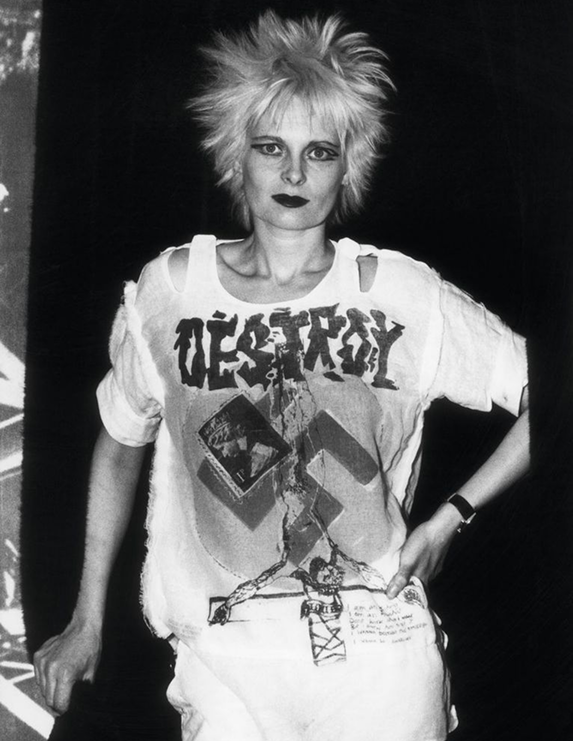
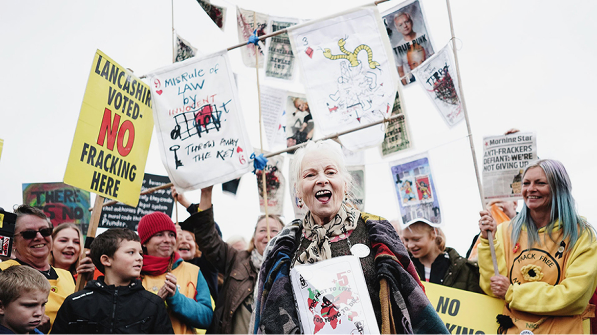

Королева панка и революционерка моды
Вивьен Вествуд (Vivienne Westwood) – это известный британский дизайнер моды, считающийся одним из самых влиятельных фигур в мире моды. Родом из Великобритании, Вивиен начала свою карьеру в мире моды в конце 1960-х годов, в период культурной революции и эпохи панк-рока.
Вивьен Вествуд (1941–2022) — британская дизайнерша, чьё имя навсегда вписано в историю моды как символ бунта, интеллектуальной смелости и неукротимого творческого духа. Родившись в рабочей семье в Дербишире, она пришла в моду не через традиционные академические пути, а через энергию уличной культуры и стремление к самовыражению. Её карьера началась в конце 1960-х — в эпоху культурной революции, когда мода стала языком протеста и новой идентичности.
Когда Вивьен жила с родителями Gordon Swire и Dora Swire , ситуация в ее семье была, мягко говоря, не совсем спокойной. Жили они бедно, голодали, и именно из-за этого была вынуждена в 21 год выскочить замуж за первого встречного. Первым встречным оказался Дерек Вествуд (Derek Westwood), с которым она развелась спустя 3 года, родив ему двоих детей: дочь Роуз и сына Бена. От мужа она на память оставила только фамилию, под которой позже и прославилась.
В 1965 году Вествуд познакомилась с Малкольмом Маклареном (будущим менеджером группы Sex Pistols). Дружба постепенно переросла в любовь, и так, Вивьен ушла от мужа, а в 1974 родила второго сына, но уже от Малкольма. В 1971 году в лондонском районе Челси Вествуд открыла свой первый бутик «Let It Rock» (позже переименованный в «SEX» и «Seditionaries») вместе с Малкольмом Маклареном. Именно здесь родился визуальный код панк-движения: рваные футболки с провокационными принтами, кожа с заклёпками, цепи, булавки и надписи, бросающие вызов обществу. Вествуд превратила уличный бунт в эстетику, а бутик стал манифестом нового поколения. Этот период определил её кредо: мода — не украшение, а инструмент социального высказывания. В 1980 из-за распада группы бутик вновь переименовали, теперь он носил название «World’s End» (его используют до сих пор). Уже годом позже Вивьен зарегистрировала торговую марку Vivienne Westwood, и тогда же представила свою первую коллекцию, вдохновленную пиратской эстетикой. Это стало отправной точкой для бренда и помогло ему стать узнаваемым.
К 1980-м годам Вествуд эволюционировала от панк-агитатора в признанного дизайнера мирового уровня. Её коллекции стали сложнее: она соединила анархию молодости с глубоким интересом к истории костюма — корсеты эпохи Возрождения, кринолины викторианской эпохи, твидовые ткани аристократии. Её подиумы превратились в театральные постановки, где каждая деталь несла культурный или политический подтекст. В 1992 году королева Елизавета II присвоила ей звание Дамы-командора Ордена Британской империи — ироничный финал пути от бунтарки к национальному достоянию.
Бренд Vivienne Westwood всегда оставался верен трём принципам:
• Провокация через красоту — сочетание классических силуэтов с диссонансными деталями;
• Интеллектуальная мода — вдохновение историей, литературой, политикой;
• Активизм — последние десятилетия жизни Вествуд посвятила борьбе за экологию, права человека и устойчивое развитие в индустрии моды.
Её украшения — особенно знаменитые кольца с шариком «Orb» — стали культовыми артефактами, выпускаемыми лимитированными тиражами и собираемыми как произведения искусства.
Вивьен Вествуд ушла из жизни в декабре 2022 года, оставив после себя не просто модный дом, а целую философию: быть смелым, мыслить критически и никогда не бояться быть другим. Её наследие живёт в каждом, кто носит одежду не для того, чтобы соответствовать, а чтобы заявить о себе. Как говорила сама Вествуд: «Мода — это не то, что вы носите. Мода — это то, как вы живёте».
